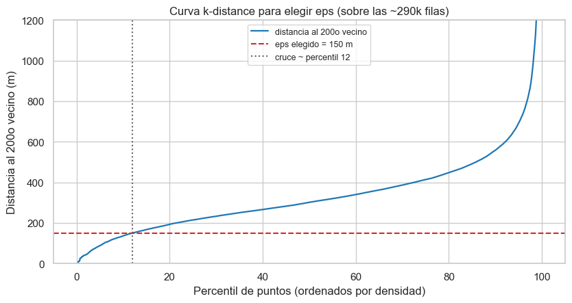
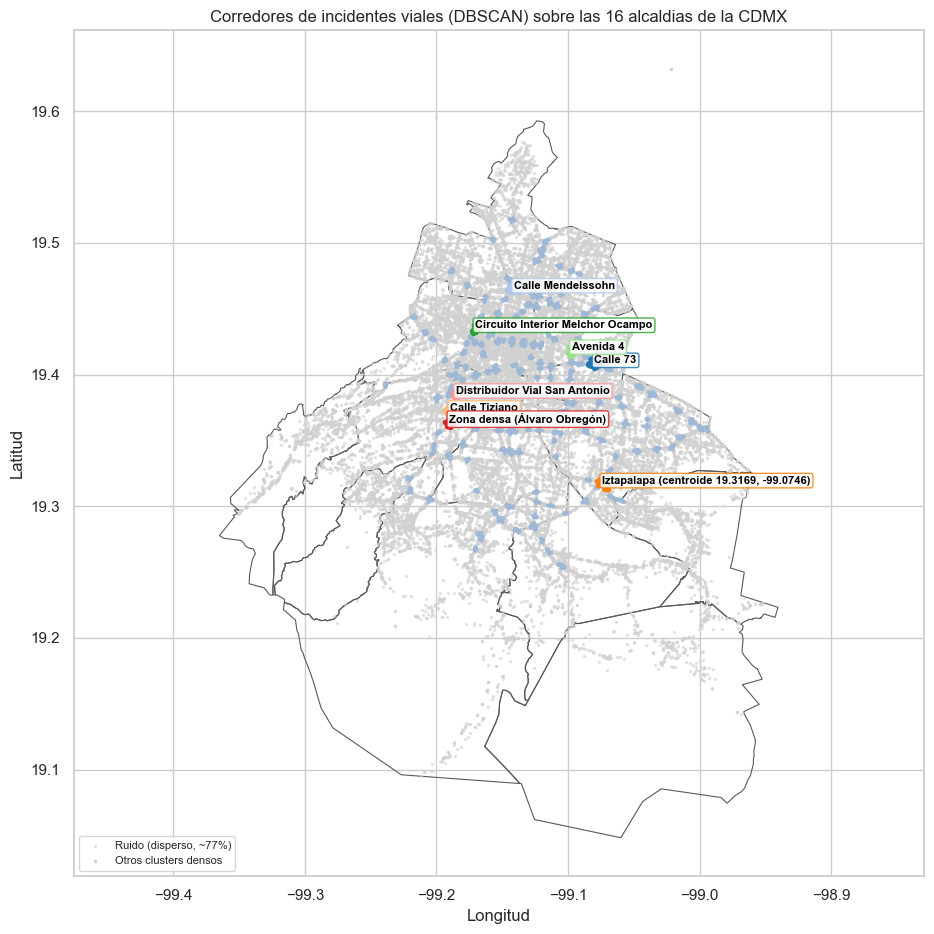
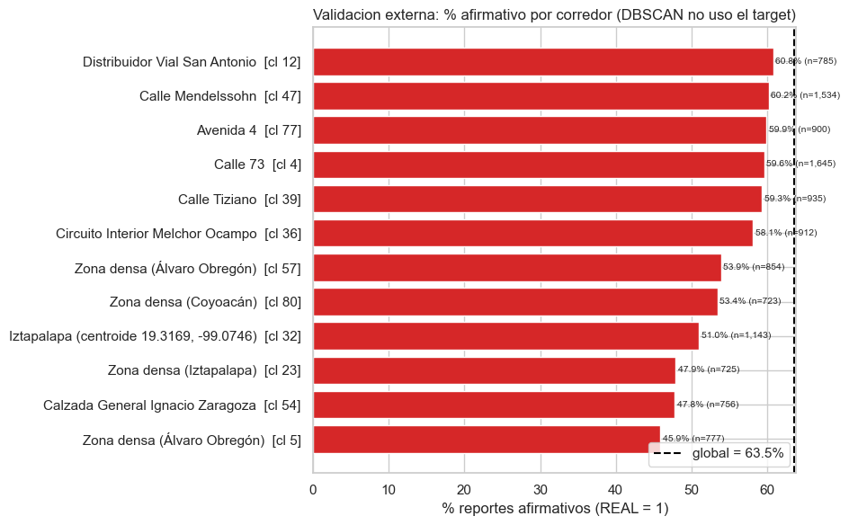

Triage de reportes de incidentes viales del C5 (CDMX 2022–2024)
Notebook 3 — Clustering espacial: corredores viales con DBSCAN
Proyecto Final — Almacenes y Minería de Datos
Profesora: Jessica Santizo Galicia Ayudantes: Diego Antonio Villalba González y Ares Gael Castro Romero Integrante: José Rubén Alfaro González — No. de cuenta: 320516436 Fecha: 2026-06
En los notebooks anteriores hicimos EDA (01_eda.ipynb) y un clasificador supervisado (02_clasificacion.ipynb). Aquí cambiamos de pregunta: en lugar de predecir si un reporte se confirma, buscamos estructura geográfica en los incidentes. Concretamente: ¿en qué vialidades de la CDMX se concentran los incidentes viales, y de qué tipo son?
Usamos DBSCAN sobre las coordenadas (latitud, longitud). El target REALno participa en el clustering: lo usamos solo después para caracterizar cada corredor.
¿Por qué DBSCAN y no K-Means?
DBSCAN agrupa por densidad: junta puntos que tienen muchos vecinos cerca y deja como ruido los que están aislados. Esto encaja con nuestra pregunta por tres razones:
Encuentra zonas densas de forma libre. Un corredor vial es una nube alargada que sigue el trazo de una avenida. K-Means solo arma grupos ~esféricos (fronteras convexas) y nunca capturaría un corredor lineal.
No hay que fijar k. El número de corredores emerge de la densidad de los datos, no lo imponemos a mano como el k de K-Means. En realidad no sabemos cuantos corredores significativos hay, por lo que DBSCAN es la mejor solución.
Separa el ruido. La mayoría de los incidentes de la ciudad están dispersos, fuera de cualquier corredor denso. DBSCAN los etiqueta como ruido en vez de forzarlos a un grupo; ese ruido es señal (incidentes difusos por toda la traza urbana), no un error.
Por eso aquí usamos solo DBSCAN, pues es la herramienta correcta para descubrir corredores y cruceros viales con nombre propio.
1. Carga de datos
Leemos el dataset de trabajo data/c5_listo.parquet (289,885 incidentes): el mismo que usan los notebooks 01 y 02, ya depurado (sin duplicados D, sin el año-ruido 2021) y con el target nuevo REAL. Usamos rutas relativas a la ubicación del notebook con pathlib: el notebook vive en notebooks/, así que los datos están en ../data/.
REAL no participa en el clustering, solo lo cargamos para caracterizar los corredores después (validación externa). En este dataset el balance global es 63.5 % afirmativos (REAL = 1) frente a 36.5 % falsos/informativos (REAL = 0).
import jsonimport mathfrom collections import Counterfrom pathlib import Pathimport sysimport numpy as npimport pandas as pdimport matplotlib.pyplot as pltimport seaborn as snssns.set_theme(style="whitegrid")SEMILLA =42DIR_DATA = Path("..") /"data"DIR_FIG = Path("..") /"figures"DIR_FIG.mkdir(exist_ok=True)# Codigo fuente del clustering en src/clustering.py._raiz = Path("..").resolve()ifstr(_raiz) notin sys.path: sys.path.insert(0, str(_raiz))from src.clustering import ClusteringEspacialdf = pd.read_parquet(DIR_DATA /"c5_listo.parquet").reset_index(drop=True)print(f"Incidentes cargados: {len(df):,} filas x {df.shape[1]} columnas")print(f"% afirmativos global (target REAL=1): {df['REAL'].mean() *100:.1f}%")df[["latitud", "longitud", "incidente_c4", "alcaldia_catalogo", "FRANJA", "REAL"]].head()
Incidentes cargados: 289,885 filas x 18 columnas
% afirmativos global (target REAL=1): 63.5%
latitud
longitud
incidente_c4
alcaldia_catalogo
FRANJA
REAL
0
19.41525
-99.14832
Choque con lesionados
Cuauhtémoc
Madrugada
1
1
19.443649
-99.165781
Motociclista
Miguel Hidalgo
Mañana
1
2
19.45163
-99.05469
Choque sin lesionados
Gustavo A. Madero
Mañana
1
3
19.29107
-99.07114
Motociclista
Iztapalapa
Madrugada
1
4
19.376169
-99.059997
Choque sin lesionados
Iztapalapa
Mañana
1
2. Proyección de lat/lon a metros
DBSCAN necesita un radio de vecindad eps. Sobre latitud/longitud en grados, eps no tiene un significado físico claro: a la latitud de la CDMX un grado de longitud (~105 km) y uno de latitud (~110.5 km) miden distinto, así que una distancia euclídea en grados deforma el mapa.
Por eso, proyectamos a metros con una equirectangular local centrada en la CDMX:
con \(\text{lat}_0 = 19.36\), \(\text{lon}_0 = -99.13\). Tras proyectar, eps está en metros sobre el asfalto, un eps de 150 m se lee directamente como “incidentes a menos de 150 m unos de otros pertenecen al mismo corredor”. Así el parámetro es interpretable y reproducible.
# Proyeccion y DBSCAN viven en src/clustering.ClusteringEspacial. Creamos la# instancia y exponemos sus metodos como funciones locales para que las celdas# siguientes (centroides, nombres) los usen sin cambios.LAT0, LON0 =19.36, -99.13ce = ClusteringEspacial(lat0=LAT0, lon0=LON0, eps=150.0, min_samples=200)proyectar, desproyectar = ce.proyectar, ce.desproyectarX = ce.matriz_coords(df) # (289885, 2) en metrosprint(f"Proyectados {X.shape[0]:,} puntos a metros.")print(f" x (oeste-este): [{X[:, 0].min():.0f}, {X[:, 0].max():.0f}] m")print(f" y (sur-norte): [{X[:, 1].min():.0f}, {X[:, 1].max():.0f}] m")
Proyectados 289,885 puntos a metros.
x (oeste-este): [-23375, 19284] m
y (sur-norte): [-29307, 30089] m
3. Selección de eps: la curva k-distance
El método estándar para elegir eps es la curva k-distance. Para cada punto se calcula la distancia a su \(k\)-ésimo vecino (con $k = $ min_samples), se ordenan ascendentemente y se busca el codo, que es donde la curva pasa de plana (zona densa) a empinada (zona dispersa). Ese codo separa núcleo denso de ruido.
Calculamos la curva sobre las ~290k filas completas, la misma densidad sobre la que correrá el DBSCAN final. (Una submuestra al ~10% bajaría la densidad local ~10× y desplazaría el codo a un eps engañoso.). También es importante mencionar que estas medidas se pueden variar de forma más práctica. Por ejemplo, si estamos buscando avenidas donde hay mayor cantidad de incidencias, podemos ajustar el epsilon a un valor más grande pero aumentar las incidencias también para tener avenidas claras. Por otro lado, si ajustamos un radio epsilon ligeramente más bajo, somos capaces de encontrar intersecciones o cruces donde es más probable que haya accidentes, y podemos tomar acción para disminuirlos.
MIN_SAMPLES, EPS_M = ce.min_samples, ce.eps # 200 vecinos; eps = 150 m# Distancia al MIN_SAMPLES-esimo vecino (metodo de src/clustering), conjunto completo.kdist = ce.curva_kdistance(X, n_jobs=2)pct = np.linspace(0, 100, len(kdist))cruce =float((kdist <= EPS_M).mean() *100)fig, ax = plt.subplots(figsize=(8.5, 4.6))ax.plot(pct, kdist, color="#1f77b4", lw=1.6, label=f"distancia al {MIN_SAMPLES}o vecino")ax.axhline(EPS_M, color="#d62728", ls="--", label=f"eps elegido = {EPS_M:.0f} m")ax.axvline(cruce, color="0.4", ls=":", label=f"cruce ~ percentil {cruce:.0f}")ax.set_ylim(0, 1200)ax.set_xlabel("Percentil de puntos (ordenados por densidad)")ax.set_ylabel(f"Distancia al {MIN_SAMPLES}o vecino (m)")ax.set_title("Curva k-distance para elegir eps (sobre las ~290k filas)")ax.legend(fontsize=9)plt.tight_layout()plt.show()print(f"eps = {EPS_M:.0f} m cruza la curva en el percentil ~{cruce:.0f}.")

eps = 150 m cruza la curva en el percentil ~12.
La curva es plana y baja solo en su primer tramo (el ~12 % de los puntos más densos, con su 200º vecino a ≤ 150 m) y enseguida se dispara: ese despegue temprano es el codo. Por debajo del codo, los puntos tienen sus 200 vecinos muy cerca (cruceros y corredores reales). Por encima, la distancia al 200º vecino crece rápido (incidentes dispersos). Elegimos eps = 150 m, el ancho típico de un crucero o una vialidad densa, y min_samples = 200, deliberadamente alto, pues no buscamos micro-cúmulos de cuatro choques, sino corredores con masa crítica (≥200 incidentes en 2022–2024). Implicación: con estos valores la mayor parte de los puntos quedará como ruido, y eso es lo esperado pues queremos quedarnos solo con las vialidades densas e identificables, no con todo el mapa.
4. DBSCAN sobre las ~290k coordenadas
Corremos DBSCAN con los parámetros justificados arriba sobre las coordenadas proyectadas a metros. La etiqueta -1 es ruido (puntos que no pertenecen a ningún núcleo denso).
# DBSCAN (metodo de src/clustering) sobre las coordenadas en metros.df["cluster"] = ce.ajustar(X, n_jobs=2)n_ruido =int((df["cluster"] ==-1).sum())pct_ruido = n_ruido /len(df) *100n_clusters = df.loc[df["cluster"] !=-1, "cluster"].nunique()print(f"Clusters densos encontrados: {n_clusters}")print(f"Ruido: {n_ruido:,} puntos ({pct_ruido:.1f}%)")print(f"Puntos en algun corredor: {len(df) - n_ruido:,} ({100- pct_ruido:.1f}%)")
Clusters densos encontrados: 168
Ruido: 223,958 puntos (77.3%)
Puntos en algun corredor: 65,927 (22.7%)
DBSCAN encontro cerca de 170 cúmulos densos y deja alrededor de tres cuartas partes de los incidentes como ruido (~77 %). Ese ruido alto no es un fallo del método, tras quitar los duplicados, la mayoría de los incidentes viales de la CDMX ocurren fuera de corredores densos, repartidos por toda la traza urbana. Solo cerca de 1 de cada 5 incidentes cae en una vialidad con masa crítica (≥200 reportes en 2022–2024). Esto significa que hay una minoría “concentrada” que se puede atacar por corredores concretos (lo que sigue) y una mayoría “difusa” que exige cobertura general. Acciones como ver que sucede en esas vialidades, o tener a más personal presente o cerca de esas vialidades podría ayudar a tener una mejor respuesta ante incidentes.
5. Caracterización de los corredores más grandes
Nos quedamos con los 12 clusters más grandes (los corredores con más masa) y, para cada uno, calculamos con un groupby simple: - n: número de incidentes. - % REAL: tasa de reportes afirmativos (REAL = 1; caracterización a posteriori, el target no entró en DBSCAN). - tipo de incidente dominante (incidente_c4) con su porcentaje. - alcaldía dominante y franja pico.
Además medimos la morfología con PCA 2D sobre los puntos de cada cluster: - elongación\(= \sqrt{\text{var}_1/\text{var}_2}\) (qué tan estirada está la nube), - longitud = extensión a lo largo del eje principal (PC1), en km.
Clasificamos como CORREDOR si elongación \(\ge 3\)y longitud \(\ge 1\) km; en otro caso, CRUCERO/ZONA (mancha compacta).
from sklearn.decomposition import PCAGLOB_REAL = df["REAL"].mean() *100# 63.5% afirmativos globaltam = df.loc[df["cluster"] !=-1, "cluster"].value_counts()top =list(tam.head(12).index) # los 12 clusters más grandesfilas = []centroides = {} # cluster -> (lat, lon) del centroide, para nombrar y mapearfor cl in top: g = df[df["cluster"] == cl] pts = X[g.index.to_numpy()] # puntos en metros de este cluster# Centroide (en metros -> lat/lon) cx, cy = pts[:, 0].mean(), pts[:, 1].mean() clat, clon = desproyectar(cx, cy) centroides[cl] = (clat, clon)# Morfología por PCA p = PCA(n_components=2, random_state=SEMILLA).fit(pts) var = p.explained_variance_ elong = math.sqrt(var[0] / var[1]) if var[1] >0elsefloat("inf") proj1 = p.transform(pts)[:, 0] long_km = (proj1.max() - proj1.min()) /1000.0 clase ="CORREDOR"if (elong >=3and long_km >=1) else"CRUCERO/ZONA" inc = g["incidente_c4"].value_counts() filas.append({"cluster": int(cl),"n": len(g),"pct_real": round(g["REAL"].mean() *100, 1),"incidente_dom": inc.index[0],"pct_inc_dom": round(inc.iloc[0] /len(g) *100, 1),"alcaldia_dom": g["alcaldia_catalogo"].value_counts().index[0],"franja_pico": g["FRANJA"].value_counts().index[0],"elongacion": round(elong, 2),"longitud_km": round(long_km, 2),"clase": clase, })caracter = pd.DataFrame(filas)n_corr = (caracter["clase"] =="CORREDOR").sum()print(f"De los {len(top)} clusters top: {n_corr} corredores lineales y "f"{len(top) - n_corr} cruceros/zonas compactas.")caracter
De los 12 clusters top: 1 corredores lineales y 11 cruceros/zonas compactas.
cluster
n
pct_real
incidente_dom
pct_inc_dom
alcaldia_dom
franja_pico
elongacion
longitud_km
clase
0
4
1645
59.6
Choque sin lesionados
56.0
Venustiano Carranza
Noche
1.56
1.15
CRUCERO/ZONA
1
47
1534
60.2
Choque sin lesionados
51.6
Gustavo A. Madero
Noche
2.50
1.22
CRUCERO/ZONA
2
32
1143
51.0
Choque sin lesionados
58.2
Iztapalapa
Noche
3.34
1.10
CORREDOR
3
39
935
59.3
Choque sin lesionados
55.8
Benito Juárez
Tarde
2.43
0.95
CRUCERO/ZONA
4
36
912
58.1
Choque sin lesionados
59.2
Miguel Hidalgo
Tarde
2.84
0.87
CRUCERO/ZONA
5
77
900
59.9
Choque sin lesionados
54.1
Venustiano Carranza
Tarde
2.51
0.95
CRUCERO/ZONA
6
57
854
53.9
Choque sin lesionados
56.1
Álvaro Obregón
Noche
1.35
0.67
CRUCERO/ZONA
7
12
785
60.8
Choque sin lesionados
48.3
Benito Juárez
Tarde
1.98
0.89
CRUCERO/ZONA
8
5
777
45.9
Choque sin lesionados
57.9
Álvaro Obregón
Noche
3.26
0.84
CRUCERO/ZONA
9
54
756
47.8
Choque sin lesionados
50.3
Iztacalco
Noche
1.70
0.68
CRUCERO/ZONA
10
23
725
47.9
Choque sin lesionados
54.5
Iztapalapa
Noche
2.37
0.84
CRUCERO/ZONA
11
80
723
53.4
Choque sin lesionados
57.3
Coyoacán
Noche
2.13
0.83
CRUCERO/ZONA
Tras quitar los duplicados, los clusters más grandes son mayoritariamente cruceros / zonas compactas (intersecciones y nodos donde se acumulan choques) y solo unos pocos alcanzan la forma de corredor lineal (elongación ≥ 3 y ≥ 1 km de longitud): la deduplicación adelgaza las líneas y deja sobre todo manchas densas alrededor de los nodos. El incidente dominante es casi siempre Choque sin lesionados, algo comun en vialidades de alto flujo, y la franja pico cae en tarde/noche (hora pico del tránsito). Dependiendo la forma, el tipo de despacho difiere. Por ejemplo, para un crucero basta con cubrirlo con una grúa o patrulla fija, mienstras que para un corredor es necesario patrullaje a lo largo sobre el tramo, así que la morfología no es un dato cosmético sino operativo.
6. Nombres reales de las vialidades
En data/corredores_geocodificados.json ya tenemos una lista de corredores geocodificados (clave cluster, más lat, lon, alcaldia, road, vialidad, etc.), preparada de antemano para no llamar a ninguna API desde el notebook.
Método de cruce. Asignamos a cada centroide del top el nombre del registro geocodificado más cercano (distancia en metros sobre las coordenadas proyectadas). Este criterio por proximidad es robusto aunque el etiquetado numérico de DBSCAN difiera del usado al geocodificar (el JSON se geocodificó sobre otra corrida): siempre toma la vialidad del corredor que cae sobre el mismo punto del mapa. Para no mal-etiquetar, imponemos un umbral de 1,000 m: si el registro geocodificado más cercano queda más lejos, no hay un nombre confiable y usamos una etiqueta genérica con la alcaldía dominante. La columna dist_geo_m deja auditable la calidad de cada cruce.
geo = json.loads((DIR_DATA /"corredores_geocodificados.json").read_text(encoding="utf-8"))# Centroides geocodificados, proyectados a metros para medir distancia.gx, gy = proyectar(np.array([g["lat"] for g in geo]), np.array([g["lon"] for g in geo]))def vialidad_mas_cercana(clat, clon):'''Nombre del corredor geocodificado mas cercano al centroide (clat, clon).''' cx, cy = proyectar(clat, clon) d2 = (gx - cx) **2+ (gy - cy) **2 j =int(np.argmin(d2))return geo[j]["vialidad"], math.sqrt(d2[j])UMBRAL_NOMBRE_M =1000.0# más lejos que esto -> no hay nombre confiablealcaldia_dom =dict(zip(caracter["cluster"], caracter["alcaldia_dom"]))nombre = {} # cluster -> vialidad (con colonia)nombre_corto = {} # cluster -> solo la avenida (antes del " · ")dist_geo = {} # cluster -> distancia (m) al registro geocodificadofor cl in top: clat, clon = centroides[cl] vial, dist_m = vialidad_mas_cercana(clat, clon) dist_geo[cl] = dist_mif dist_m <= UMBRAL_NOMBRE_M: nombre[cl] = vial nombre_corto[cl] = vial.split(" · ")[0] marca =""else: # cruce poco fiable -> etiqueta genérica por alcaldía nombre[cl] =f"Zona densa ({alcaldia_dom[cl]})" nombre_corto[cl] =f"Zona densa ({alcaldia_dom[cl]})" marca =" [lejano -> etiqueta genérica]"print(f"cluster {cl:>4} (n={tam[cl]:5d}) -> {nombre_corto[cl][:42]:42s} | "f"centroide a {dist_m:6.0f} m del registro geocodificado{marca}")caracter["vialidad"] = caracter["cluster"].map(nombre_corto)caracter["dist_geo_m"] = caracter["cluster"].map(lambda c: round(dist_geo[c], 0))caracter[["vialidad", "n", "pct_real", "incidente_dom", "alcaldia_dom","franja_pico", "clase", "longitud_km", "dist_geo_m"]]
cluster 4 (n= 1645) -> Calle 73 | centroide a 218 m del registro geocodificado
cluster 47 (n= 1534) -> Calle Mendelssohn | centroide a 126 m del registro geocodificado
cluster 32 (n= 1143) -> Iztapalapa (centroide 19.3169, -99.0746) | centroide a 74 m del registro geocodificado
cluster 39 (n= 935) -> Calle Tiziano | centroide a 98 m del registro geocodificado
cluster 36 (n= 912) -> Circuito Interior Melchor Ocampo | centroide a 125 m del registro geocodificado
cluster 77 (n= 900) -> Avenida 4 | centroide a 39 m del registro geocodificado
cluster 57 (n= 854) -> Zona densa (Álvaro Obregón) | centroide a 1113 m del registro geocodificado [lejano -> etiqueta genérica]
cluster 12 (n= 785) -> Distribuidor Vial San Antonio | centroide a 248 m del registro geocodificado
cluster 5 (n= 777) -> Zona densa (Álvaro Obregón) | centroide a 5085 m del registro geocodificado [lejano -> etiqueta genérica]
cluster 54 (n= 756) -> Calzada General Ignacio Zaragoza | centroide a 476 m del registro geocodificado
cluster 23 (n= 725) -> Zona densa (Iztapalapa) | centroide a 3378 m del registro geocodificado [lejano -> etiqueta genérica]
cluster 80 (n= 723) -> Zona densa (Coyoacán) | centroide a 7641 m del registro geocodificado [lejano -> etiqueta genérica]
vialidad
n
pct_real
incidente_dom
alcaldia_dom
franja_pico
clase
longitud_km
dist_geo_m
0
Calle 73
1645
59.6
Choque sin lesionados
Venustiano Carranza
Noche
CRUCERO/ZONA
1.15
218.0
1
Calle Mendelssohn
1534
60.2
Choque sin lesionados
Gustavo A. Madero
Noche
CRUCERO/ZONA
1.22
126.0
2
Iztapalapa (centroide 19.3169, -99.0746)
1143
51.0
Choque sin lesionados
Iztapalapa
Noche
CORREDOR
1.10
74.0
3
Calle Tiziano
935
59.3
Choque sin lesionados
Benito Juárez
Tarde
CRUCERO/ZONA
0.95
98.0
4
Circuito Interior Melchor Ocampo
912
58.1
Choque sin lesionados
Miguel Hidalgo
Tarde
CRUCERO/ZONA
0.87
125.0
5
Avenida 4
900
59.9
Choque sin lesionados
Venustiano Carranza
Tarde
CRUCERO/ZONA
0.95
39.0
6
Zona densa (Álvaro Obregón)
854
53.9
Choque sin lesionados
Álvaro Obregón
Noche
CRUCERO/ZONA
0.67
1113.0
7
Distribuidor Vial San Antonio
785
60.8
Choque sin lesionados
Benito Juárez
Tarde
CRUCERO/ZONA
0.89
248.0
8
Zona densa (Álvaro Obregón)
777
45.9
Choque sin lesionados
Álvaro Obregón
Noche
CRUCERO/ZONA
0.84
5085.0
9
Calzada General Ignacio Zaragoza
756
47.8
Choque sin lesionados
Iztacalco
Noche
CRUCERO/ZONA
0.68
476.0
10
Zona densa (Iztapalapa)
725
47.9
Choque sin lesionados
Iztapalapa
Noche
CRUCERO/ZONA
0.84
3378.0
11
Zona densa (Coyoacán)
723
53.4
Choque sin lesionados
Coyoacán
Noche
CRUCERO/ZONA
0.83
7641.0
Buena parte de los nodos densos cae sobre la red primaria real de la CDMX (Circuito Interior (Melchor Ocampo), Avenida Río Churubusco, Calzada Ignacio Zaragoza, Distribuidor Vial San Antonio) más cruceros densos en Venustiano Carranza, Gustavo A. Madero, Benito Juárez e Iztapalapa. Donde el centroide cae a pocos metros del registro geocodificado (dist_geo_m pequeño) el nombre es confiable; donde el registro más cercano queda lejos (recordemos que el JSON se geocodificó sobre otra corrida de DBSCAN), preferimos la etiqueta genérica por alcaldía antes que arriesgar un nombre equivocado. Implicación: los nodos con nombre confiable quedan directamente accionables para patrullaje, el resto se localiza por alcaldía.
7. Los mapas: corredores sobre la ciudad
7.1 Mapa estático
Dibujamos el contorno de las alcaldías parseando data/alcaldias.geojson a mano (con json + matplotlib, ya que no hay geopandas en el entorno), el ruido en gris claro (la mitad dispersa), los clusters coloreados y los 8 corredores principales etiquetados con su nombre de vialidad. Para que el dibujo sea ligero, tomamos una muestra de ≤40k puntos.
def anillos_geojson(ruta):'''Parseo manual del GeoJSON de alcaldias -> lista de anillos (arrays lon/lat).''' gj = json.loads(Path(ruta).read_text(encoding="utf-8")) anillos = []for f in gj["features"]: g = f["geometry"] polys = [g["coordinates"]] if g["type"] =="Polygon"else g["coordinates"]for poly in polys: anillos.append(np.asarray(poly[0], dtype=float)) # anillo exteriorreturn anillosanillos = anillos_geojson(DIR_DATA /"alcaldias.geojson")top8 = top[:8] # los 8 corredores a etiquetar# Muestra <=40k para dibujar (semilla 42).muestra = df.sample(n=min(40000, len(df)), random_state=SEMILLA)es_top = muestra["cluster"].isin(top)es_ruido = muestra["cluster"] ==-1fig, ax = plt.subplots(figsize=(9.5, 9.5))for an in anillos: # contorno de alcaldias ax.plot(an[:, 0], an[:, 1], color="0.35", lw=0.8, zorder=1)ruido = muestra[es_ruido] # ruido gris de fondoax.scatter(ruido["longitud"], ruido["latitud"], s=2, c="0.82", alpha=0.5, zorder=2, label="Ruido (disperso, ~77%)")otros = muestra[~es_ruido &~es_top] # otros clusters densosax.scatter(otros["longitud"], otros["latitud"], s=3, c="#9fb8d6", alpha=0.45, zorder=3, label="Otros clusters densos")paleta = sns.color_palette("tab20", len(top8)) # top-8 coloreados + etiquetafor i, cl inenumerate(top8): sub = muestra[muestra["cluster"] == cl] ax.scatter(sub["longitud"], sub["latitud"], s=8, color=paleta[i], zorder=4) clat, clon = centroides[cl] ax.annotate(nombre_corto[cl], (clon, clat), fontsize=8, fontweight="bold", color="black", zorder=5, bbox=dict(boxstyle="round,pad=0.2", fc="white", ec=paleta[i], alpha=0.85))ax.set_xlabel("Longitud")ax.set_ylabel("Latitud")ax.set_title("Corredores de incidentes viales (DBSCAN) sobre las 16 alcaldias de la CDMX")ax.legend(loc="lower left", fontsize=8)ax.set_aspect("equal", adjustable="datalim")plt.tight_layout()plt.savefig(DIR_FIG /"figura_dbscan_vialidades.png", dpi=130, bbox_inches="tight")plt.show()print("Figura guardada en figures/figura_dbscan_vialidades.png")

Figura guardada en figures/figura_dbscan_vialidades.png
Sobre la silueta real de la ciudad, los nodos coloreados resaltan cruceros y ejes viales reconocibles (centro, oriente y sur), mientras el gris de fondo recuerda que la mayor parte del problema está dispersa. Ya que DBSCAN no particiona la ciudad, resalta las estructuras densas y deja el resto como fondo.
7.2 Mapa interactivo (Plotly + OpenStreetMap)
Con plotly.express.scatter_map sobre teselas de OpenStreetMap, cada punto va coloreado por corredor y el hover muestra vialidad, tipo de incidente, alcaldía, franja y % real. La celda queda como un objeto Plotly interactivo (zoom / pan / hover). Limitamos la muestra a ≤40k puntos para un output fluido.
import plotly.express as pximport plotly.io as pio# plotly_mimetype -> el output del notebook se guarda como JSON Plotly nativo# (application/vnd.plotly.v1+json), que se renderiza con zoom/pan/hover sin inflar# el .ipynb con una copia de plotly.js.pio.renderers.default ="plotly_mimetype"top_set =set(top)pct_real_corr =dict(zip(caracter["cluster"], caracter["pct_real"]))def grupo(cl): cl =int(cl)if cl in top_set:return nombre_corto[cl]return"Ruido (disperso)"if cl ==-1else"Otros clusters densos"dvis = df.sample(n=min(40000, len(df)), random_state=SEMILLA).copy()dvis["lat"] = dvis["latitud"].astype("float64")dvis["lon"] = dvis["longitud"].astype("float64")dvis["corredor"] = dvis["cluster"].map(grupo)dvis["pct_real_corredor"] = dvis["cluster"].map(lambda c: pct_real_corr.get(int(c), np.nan))fig = px.scatter_map( dvis, lat="lat", lon="lon", color="corredor", hover_data={"incidente_c4": True, "alcaldia_catalogo": True, "FRANJA": True,"pct_real_corredor": ":.1f", "lat": False, "lon": False,"corredor": False}, map_style="open-street-map", center={"lat": 19.36, "lon": -99.13}, zoom=10, height=720, opacity=0.6, title="Corredores de incidentes viales — CDMX (DBSCAN, interactivo)")fig.update_layout(legend=dict(font=dict(size=9)), margin=dict(l=0, r=0, t=40, b=0))fig.show()
Unable to display output for mime type(s): application/vnd.plotly.v1+json
También guardamos el mapa como HTML standalone en figures/mapa_corredores.html. Este archivo se abre directamente en cualquier navegador (no requiere Jupyter), con el mismo zoom libre y hover, y es muy útil para la demo o para compartir el resultado.
salida_html = DIR_FIG /"mapa_corredores.html"fig.write_html(salida_html, include_plotlyjs="cdn")print(f"Mapa interactivo guardado en {salida_html} "f"({salida_html.stat().st_size /1e6:.1f} MB).")print("Abrelo en el navegador para la demo (zoom y pan libres, sin Jupyter).")
Mapa interactivo guardado en ../figures/mapa_corredores.html (4.7 MB).
Abrelo en el navegador para la demo (zoom y pan libres, sin Jupyter).
8. Evaluación del clustering
8.1 Coeficiente de silueta (cohesión / separación)
La silueta mide, para cada punto, qué tan cerca está de su propio cluster frente al cluster vecino más próximo (de −1 a 1; más alto = clusters más cohesionados y separados). La calculamos sobre los puntos no-ruido (DBSCAN no asigna silueta al ruido) con una muestra de ≤20,000 puntos y semilla 42.
Coeficiente de silueta (no-ruido, muestra 20,000): 0.753
La silueta es alta y positiva (~0.75), lo que indica que los puntos densos están, en promedio, mucho más cerca de su propio cluster que del vecino. Los grupos de DBSCAN tienen cohesión y separación reales, no son cortes arbitrarios. El valor alto es coherente con lo observado y respalda que la estructura encontrada es genuina.
8.2 Validación externa: % REAL por corredor
El target REALno tuvó nada que ver en DBSCAN. Comparamos el % afirmativo de cada corredor del top contra el 63.5% global: si la vialidad concreta lleva señal sobre la veracidad del reporte, veremos una banda amplia de tasas, no todas pegadas al global.
car = caracter.sort_values("pct_real").reset_index(drop=True)# Etiqueta única por barra (vialidad + cluster) para no colapsar nombres repetidos.car["etiqueta"] = car["vialidad"] +" [cl "+ car["cluster"].astype(str) +"]"colores = ["#1f77b4"if v >= GLOB_REAL else"#d62728"for v in car["pct_real"]]fig, ax = plt.subplots(figsize=(9.5, 6))ax.barh(car["etiqueta"], car["pct_real"], color=colores, edgecolor="white")ax.axvline(GLOB_REAL, color="black", ls="--", label=f"global = {GLOB_REAL:.1f}%")for i, (v, n) inenumerate(zip(car["pct_real"], car["n"])): ax.text(v +0.3, i, f"{v:.1f}% (n={n:,})", va="center", fontsize=7.5)ax.set_xlabel("% reportes afirmativos (REAL = 1)")ax.set_title("Validacion externa: % afirmativo por corredor (DBSCAN no uso el target)")ax.legend(loc="lower right")plt.tight_layout()plt.show()# Banda sobre TODOS los clusters con masa (n>=200), no solo el top-12.g_all = (df[df["cluster"] !=-1].groupby("cluster")["REAL"] .agg(media="mean", n="count"))g_all["media"] *=100band = g_all[g_all["n"] >=200]pct_cluster = df.loc[df["cluster"] !=-1, "REAL"].mean() *100pct_ruido = df.loc[df["cluster"] ==-1, "REAL"].mean() *100print(f"% afirmativo EN clusters densos = {pct_cluster:.1f}% vs ruido = {pct_ruido:.1f}%"f" vs global = {GLOB_REAL:.1f}%")print(f"Banda entre los {len(band)} clusters con n>=200: "f"{band['media'].min():.1f}% a {band['media'].max():.1f}% (mediana {band['media'].median():.1f}%).")print(f" por encima del global: {(band['media'] >= GLOB_REAL).sum()} | "f"por debajo: {(band['media'] < GLOB_REAL).sum()}")

% afirmativo EN clusters densos = 58.9% vs ruido = 64.9% vs global = 63.5%
Banda entre los 165 clusters con n>=200: 40.8% a 89.7% (mediana 59.2%).
por encima del global: 52 | por debajo: 113
Aparecen dos hallazgos. Primero, el % afirmativo se abre en una banda amplia entre los clusters con masa (de ~41 % a ~90 %), es decir, la vialidad concreta sí lleva señal sobre la veracidad del reporte. Segundo, los corredores más grandes confirman por debajo del global: las vialidades de altísimo flujo acumulan proporcionalmente más reportes falsos/informativos (saturación, llamadas repetidas sobre-reporte en hora pico). Como DBSCAN nunca vio el target, esta separación es validación externa. Esto significa que un reporte sobre una vialidad saturada merece más verificación, no menos.